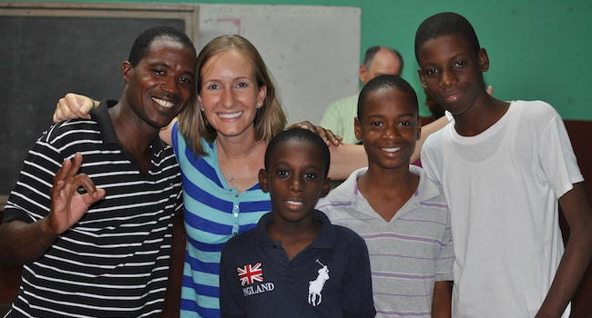

Brethren
Regular Attendance is about 40 souls. The congregation began meeting in 1992 and Maxwell has been preaching for them since 2002 in the same rented YMCA garage.

Meeting Outdoors
The rented garage has only one room, so the adults meet indoors and the children meet outdoors. But the children can only meet when the weather allows.

Impacting Generations
The church family in Montego Bay is young and growing. Building a safe and permanent sanctuary for the brethren and their guests will have an important impact on this city for years to come.

Challenging Circumstances
The congregation faces many challenges because of their location. Not only are there time constraints due to the YMCA schedule, but also distractions from noise and music on neighboring properties.

One Family
We are all one family in Christ, and God calls us to help our brothers and sisters. We ask you to pray for the success of this project, share our website with friends and family, and provide whatever financial assistance you can.